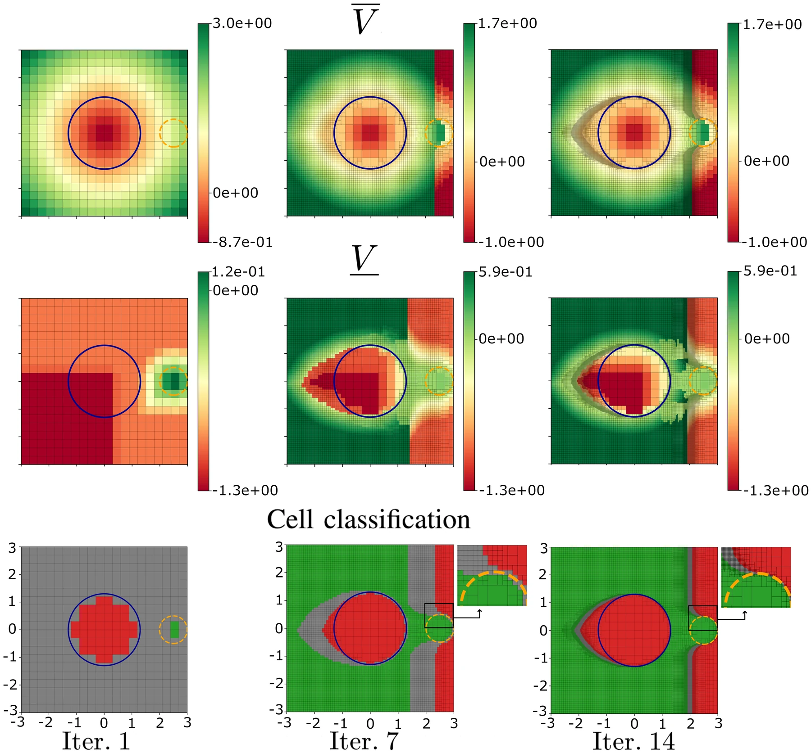
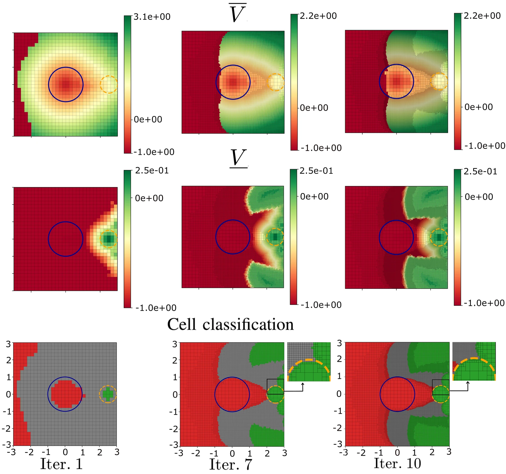

Sound lower and upper bounds
The two conservative value functions give a guaranteed classification: green cells belong to the reach-avoid set, red cells do not. Coarse grids stay sound because unlabeled cells remain gray instead of being guessed.
Department of Computer Science & Engineering, Washington University in St. Louis
Hamilton-Jacobi (HJ) reachability analysis is a fundamental tool for the safety verification and control synthesis of nonlinear control systems. Classical HJ reachability analysis methods compute value functions over grids which discretize the continuous state space. Such approaches do not account for discretization errors and thus do not guarantee that the sets represented by the computed value functions over-approximate the backward reachable sets (BRS) when given avoid specifications or under-approximate the reach-avoid sets (RAS) when given reach-avoid specifications. We address this issue by presenting an algorithm for computing sound upper and lower bounds on the HJ value functions that guarantee the sound over-approximation of BRS and under-approximation of RAS. Additionally, we develop a refinement algorithm that splits the grid cells which could not be classified as within or outside the BRS or RAS given the computed bounds to obtain corresponding tighter bounds. We validate the effectiveness of our algorithm in two case studies.
We compute sound lower and upper bounds on Hamilton–Jacobi reach-avoid value functions. Classical grid-based HJ methods evaluate the value function at cell centers and can misclassify cells because they ignore discretization error. Our bounds account for that error, so a cell is labeled only when the bound is enough to certify it.
A cell is green when the conservative lower bound is positive (Vcons > 0) and red when the conservative upper bound is negative (V̄cons < 0). Gray cells sit between the two bounds and stay unclassified. The refinement algorithm then splits those gray cells, recomputes the bounds, and produces a tighter value function concentrated near the reach-avoid boundary. Unsafe cells are never labeled safe at any resolution.
The two conservative value functions give a guaranteed classification: green cells belong to the reach-avoid set, red cells do not. Coarse grids stay sound because unlabeled cells remain gray instead of being guessed.
Algorithm 2 splits unclassified cells along their longest side and reruns value iteration. Each iteration yields tighter bounds and a finer grid only where the boundary is still unresolved.


@misc{tabbara2025computingsoundlowerupper,
title={Computing Sound Lower and Upper Bounds on Hamilton-Jacobi Reach-Avoid Value Functions},
author={Ihab Tabbara and Eliya Badr and Hussein Sibai},
year={2025},
eprint={2511.15238},
archivePrefix={arXiv},
primaryClass={eess.SY},
url={https://arxiv.org/abs/2511.15238},
}